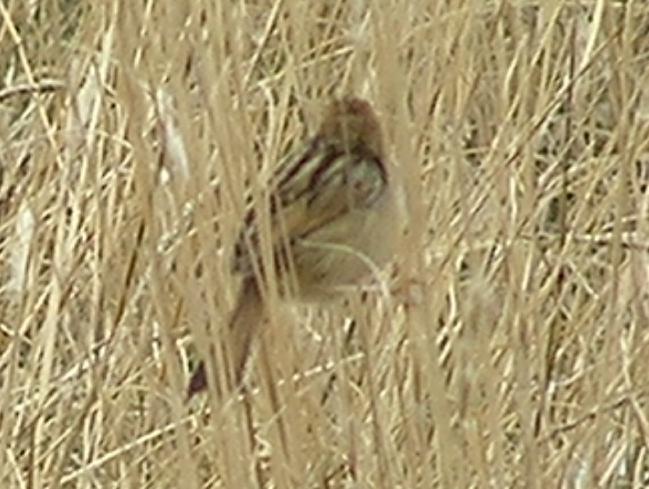
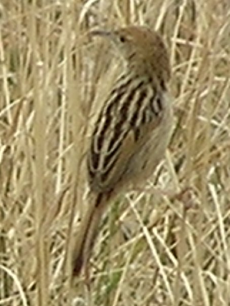
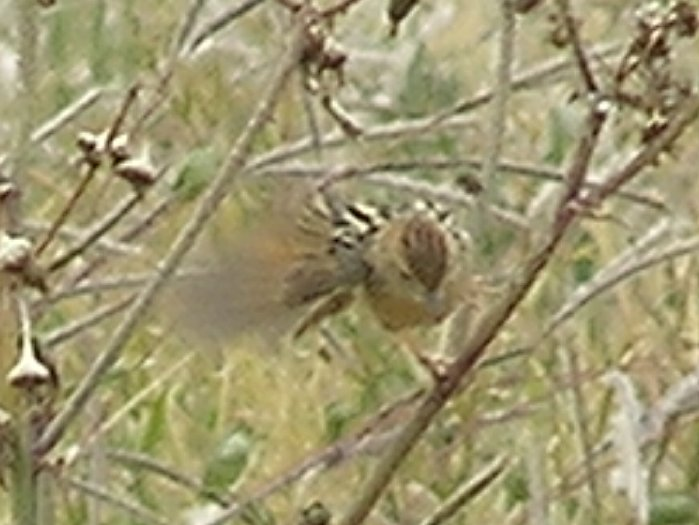

|  |  |
|  |
In high altitude farmland (a little below 3000m). The streaked tail is conspicuous.
Possibly small for a stout cisticola.
Tail too long and cap too striped for Ethiopian Cisticola. Different habitat and jizz from Pectoral-Patch Cisticola.